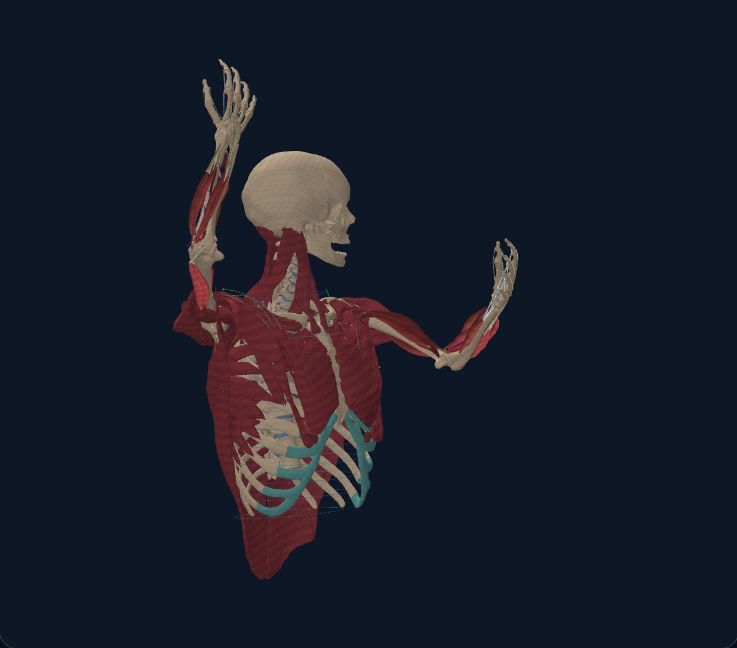

上肢3D解剖ラボ：v0.75 / v0.76 比較
根本改修は未完了です。筋の局所変形・体積・実骨間交差・医学的正確性は合格としていません。同一UI入力・同一カメラで比較しますが、中立校正の変更により同一の実骨姿勢ではありません。
 v0.75.0 — c81256f
v0.75.0 — c81256f v0.76.0 — SC/AC/GH階層と共通Quaternion修正
v0.76.0 — SC/AC/GH階層と共通Quaternion修正viewer領域のスクリーンショット原画像です。骨格／筋表示は双方で同じ条件にしています。全64枚と数値条件を保存しています。
入力・カメラ条件
取得中
v0.76 診断表示（推定軸・関節中心・胸郭曲面・選択筋経路）

試験結果・採否 ／ 未解決事項 ／ 全比較条件JSON